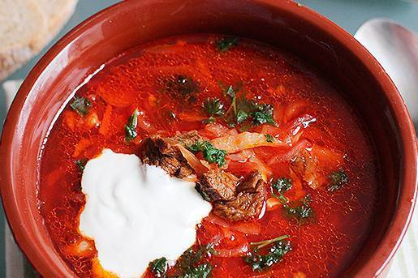

МоЯ БОРЩИНА |

Почему стоит купить наш баллон с запахом БОРЩА?Вот три причины:
Вы не найдете такого нигде
Ваши друзья гарантированно останутся в шоке
Запах родной Украины останется с вами, где бы вы не были
Баллоны с запахом БОРЩА не вредят фигуре!!!!!!!
Сделав один раз заказ у нас, Вы приобретаете постоянное право на скидку.
УВАЖАЕМЫЙ ПАТРИОТ!
Предлагаю Вам ознакомиться с нашим инновационном продуктом - баллоны с запахом БОРЩА.Борщ для украинцев — обыденное блюдо. Но у каждой хозяйки он имеет свой вкус, несмотря на то, что для его приготовления все используют практически одинаковые продукты. А все потому, что у каждой женщины свои секреты и свой рецепт этой старинной еды. В Зеньковском районе Полтавской области, например, в борщ добавляют груши и даже клубнику. Именно эта «экзотика» и пользовалась наибольшей популярностью у посетителей первого всеукраинского гастрономического фестиваля «Борщик в глиняному горщику», состоявшегося 16 августа в поселке гончаров Опошня на Полтавщине. Именно на этом фестивале мы отобрали для вас лучших специалистов, которые смогли общими усилиями ввести лучший борщевой запах!
В нашем ассортименте вы можете найти такие запахи:
Классический запах БОРЩА,
БОРЩ Одесский с морепродуктами,
БОРЩ "Супер-Азия",
БОРЩ с патиссонами “Боббсон”,
Японский красный БОРЩ,
Веганский БОРЩ с тофу,
БОРЩ“Долгохранящийся”(скисший),
БОРЩ с томатами “Американский длинный” или “Белое чудо”,
сладкий эксклюзивный БОРЩ,
и многое другое на ваш вкус, что Вы можете заказать по индивидуальному коммерческому предложению.